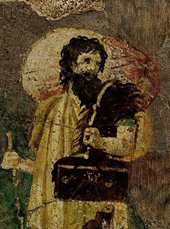

Диоген
Тролль. Философ. Космополит. Собака.
Краткая биография

Древнегреческий философ Диоген родился около 412 года до нашей эры в городе Синопа, расположенном на
южном побережье Черного моря. Его отец был трапезитом, то есть занимался разменом монет и, возможно,
выполнял некоторые кредитные операции.
В молодости он помогал отцу и вместе с ним занимался фальшивомонетничеством. Когда их уличили,
Диоген был вынужден бежать. Позднейшие биографы Диогена, пытаясь оправдать столь позорную страницу в
жизни нашего героя, сообщают легенду, что во время посещения Дельф пифия посоветовала молодому
Диогену «переоценивать ценности», что он воспринял буквально, начав обрезать монету. После
неудачного опыта с монетами, он якобы понял, что речь шла не о материальных, а о духовных ценностях.
В течение жизни Диоген встречался со многими великими людьми того времени — Платоном, Аристиппом,
Демосфеном, Александром Македонским, Евклидом и др. Детали этих встреч, в которых нищий мудрец
высмеивает богатство и власть, носят легендарный характер. Эти истории импонировали бедному простому
народу, в связи с чем стали популярными и сохранились до наших дней.
Диоген дожил до времен Александра Македонского. Когда тот находился в Коринфе, к нему приходили
многие политики и философы. Царь Македонии предполагал, что среди прочих его посетит и Диоген.
Однако философ спокойно проводил время в Крании, нисколько не интересуясь присутствием в городе
Александра. Тогда царь решил посетить Диогена сам.
В это время философ грелся на солнце. Слегка приподнявшись при виде множества приближающихся людей,
Диоген пристально посмотрел на Александра. Царь сказал: «Проси у меня, чего хочешь», на что Диоген
ответил: «Отступи чуть в сторону, не заслоняй мне солнца».
Диоген имел много учеников, некоторые из которых были бедняками и рабами. Наиболее известными из них
стали Кратет Фиванский, Онесикрит из Астипалеи, Филиск с Эгины, Моним Сиракузский, Метрокл,
Гиппархия и др.
Диоген и Платон

Античные источники приводят множество историй о взаимоотношениях двух философов. В них Диоген
опровергает и высмеивает утверждения Платона. В отличие от других мыслителей, с которыми Платон мог
дискутировать, перед Диогеном он зачастую оказывался бессилен. Диоген вёл диалог «с участием живой
плоти», и Платону ничего не оставалось как прибегать к диффамации своего оппонента. Он называл его
«обезумевшим Сократом». Это утверждение вместо издёвки было воспринято как признание Диогена,
которое поставило его на одну ступень с Сократом.
Когда Платон дал определение, имевшее большой успех: «Человек есть животное о двух ногах, лишённое
перьев», Диоген ощипал петуха и принёс к нему в школу, объявив: «Вот платоновский человек!» На что
Платон к своему определению вынужден был добавить «…и с плоскими ногтями».
А вот случай, который очень хорошо иллюстрирует метод Диогена. Когда один из адептов элейской школы
пытался очередной раз доказать основной тезис, который отстаивали философы этой школы, что истинное
бытие есть неподвижным и неделимым, то есть движения нет, оно – иллюзия чувственного мира, Диоген
просто встал и стал ходить перед докладчиком.